Falcon CDI shadow pilot
What a point-of-care documentation tool surfaces on real hospital records in the Kingdom of Saudi Arabia, measured against an independent credentialed coder.

What a point-of-care documentation tool surfaces on real hospital records in the Kingdom of Saudi Arabia, measured against an independent credentialed coder.